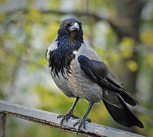
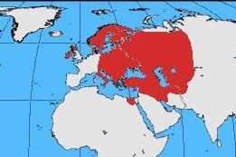

| Hooded Crow | |
|---|---|
|  | |
| In Kiev, Ukraine | |
| Binomial name | |
| Corvus cornix Linnaeus, 1758 |
|
|  |
The Hooded Crow (Corvus cornix) (sometimes called Hoodiecrow) is a Eurasian bird species in the crow genus. Widely distributed, it is also known locally as Scotch Crow, Danish Crow, and Corbie or Grey Crow in Ireland, which is what its Welsh name, Brân Lwyd, translates as. Found across Northern, Eastern and Southeastern Europe, as well as parts of the Middle East, it is an ashy grey bird with black head, throat, wings, tail and thigh feathers, as well as a black bill, eyes and feet. Like other corvids it is an omnivorous and opportunistic forager and feeder.
It is so similar in morphology and habits to the Carrion Crow (Corvus corone) that for many years they were considered by most authorities to be merely geographical races of one species. The fact that hybridization was observed where their ranges overlapped added weight to this view. However, since 2002, the Hooded Crow has been elevated to full species status after closer observation; the hybridisation was less than expected and hybrids had decreased vigour. Within the Hooded Crow species, four subspecies are recognized, with one, the Mesopotamian Crow, possibly distinct enough to warrant species status itself.
{kind=link}
{kind=link}